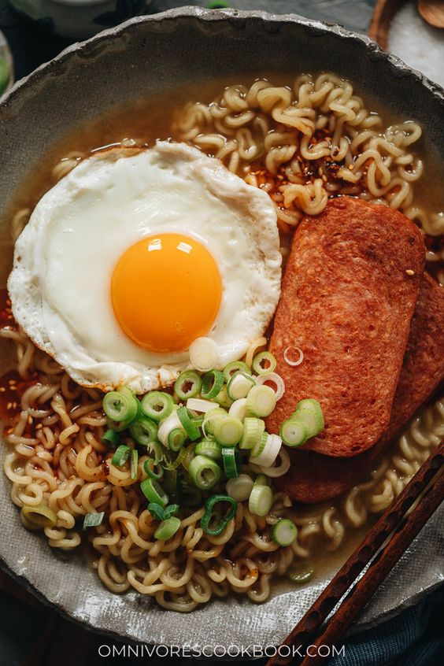

Struggle Ramen Deluxe

Description
This ramen is super easy to make and hits the spot. Some would even consider it peak frugal living.
Ingredients
- 1 ramen package of desired brand and flavor
- 1/4 cup of diced mushroom
- 3 pieces of Spam, cut to 1/4inch thickness
- 1/4 cup of chopped green onion
- Optional: 1 egg overeasy
Steps
- Start to boil about 4 cups of water in a small pot.
- While water waits to come to a boil, preheat a skillet for Spam and mushrooms. Set at medium-high heat.
- Cut Spam, green onions and mushrooms. Set aside.
- Once skillet is hot, add the strips of Spam and fry till light brown or desired doneness.
- If water is boiling, add noodles from ramen packet. Leave seasoning to the side.
- Briefly warm up mushrooms in the same skillet as the Spam.
- Add ramen to bowl with half the water remaining. Add the seasoning packet, green onions, mushrooms and spam.
- Top with overeasy egg if desired.